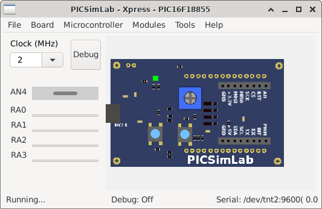

1
Introduction
2
Install
3
Simulator Interface
4
Boards
5
Experimental Boards
5.1
Curiosity
5.2
Curiosity HPC
5.3
Xpress
5.4
Remote TCP
6
Serial Communication
7
Backend Simulators
8
Tools
9
Oscilloscope
10
Spare Parts
11
Troubleshooting
12
License
A
Online Simulator
B
Use with MPLABX
C
Creating New Boards
[
prev
] [
up
] [
next
]
5.3
Xpress
This is a simple PIC microcontroller development board that uses
picsim
.

Examples
[
prev
] [
up
] [
next
]